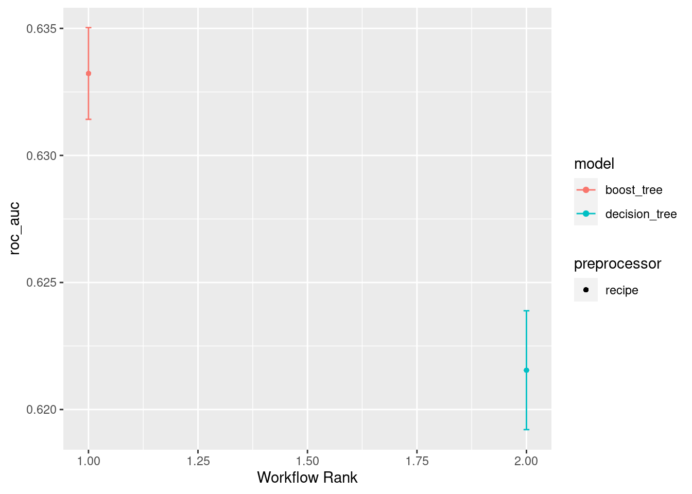
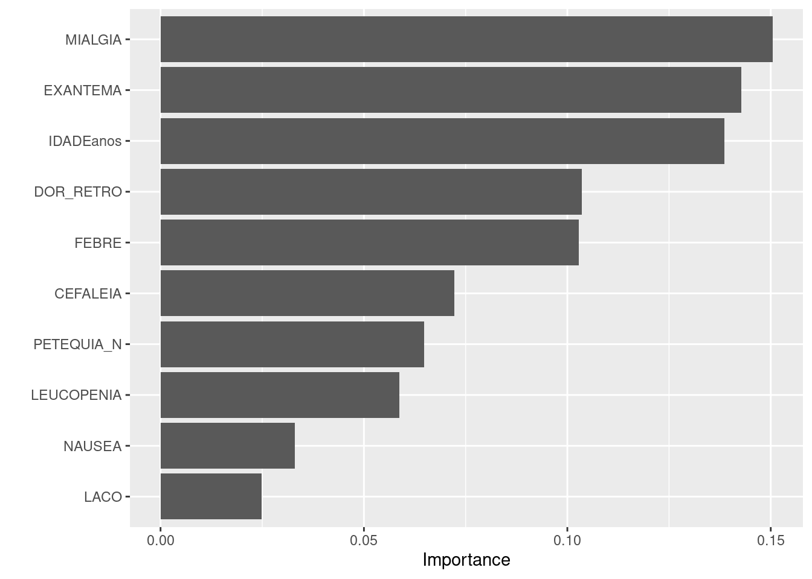

library(tidyverse)
library(arrow)
library(knitr)
library(lubridate)
library(tidymodels)
library(finetune)
library(bonsai)
library(tictoc)
library(vip)Dengue case classification
by symptoms and clinical condition
The objective of this notebook is to predict a dengue suspected case based on its symptoms, clinical conditions and other patient related variables.
This trained model may be used to reclassify suspected dengue cases with inconclusive diagnosis.
Packages
Data
Data prior to 2016 does not have patient symptoms and clinical conditions.
Cases classified as inconclusive are discarded for model training.
# Data sources
files_list <- c(
"../dengue-data/parquets/dengue_2016.parquet",
"../dengue-data/parquets/dengue_2017.parquet",
"../dengue-data/parquets/dengue_2018.parquet",
"../dengue-data/parquets/dengue_2019.parquet",
"../dengue-data/parquets/dengue_2020.parquet",
"../dengue-data/parquets/dengue_2021.parquet"
)
# Independent variables
x_vars <- c("FEBRE", "MIALGIA", "CEFALEIA",
"EXANTEMA", "VOMITO", "NAUSEA",
"DOR_COSTAS", "CONJUNTVIT",
"ARTRITE", "ARTRALGIA", "PETEQUIA_N",
"LEUCOPENIA", "LACO", "DOR_RETRO",
"DIABETES", "HEMATOLOG", "HEPATOPAT",
"HEPATOPAT", "RENAL", "HIPERTENSA",
"ACIDO_PEPT", "AUTO_IMUNE")
# Prepare data
dengue <- arrow::open_dataset(sources = files_list) %>%
# Select variables
select(all_of(c("CLASSI_FIN", "COMUNINF", "IDADEanos", "DT_SIN_PRI", x_vars))) %>%
# Filter out "Inconclusivo" cases
filter(CLASSI_FIN != "Inconclusivo") %>%
# Collect data from parquet files
collect() %>%
# Prepare variables
mutate(CLASSI_FIN = case_when(
CLASSI_FIN != "Descartado" ~ TRUE,
.default = FALSE
)) %>%
mutate(CLASSI_FIN = as.factor(CLASSI_FIN)) %>%
mutate(DT_SIN_PRI = as_date(DT_SIN_PRI)) %>%
mutate(COMUNINF = as.factor(COMUNINF)) %>%
mutate_at(.vars = x_vars, .funs = ~ . == "Sim") # Smaller dataset for tests
dengue <- sample_n(dengue, 500000)Modeling
Train and test dataset split
- Proportion between training and test: 3/4
set.seed(123)
dengue_split <- dengue %>%
initial_split(prop = 3/4, strata = CLASSI_FIN)
dengue_train <- training(dengue_split)
dengue_test <- testing(dengue_split)
set.seed(234)
dengue_folds <- vfold_cv(dengue_train, strata = CLASSI_FIN)Recipes
dengue_rec_1 <-
recipe(CLASSI_FIN ~ . , data = dengue_train) %>%
step_rm(COMUNINF) %>%
step_rm(DT_SIN_PRI) %>%
#step_date(DT_SIN_PRI, features = c("month", "week", "semester", "quarter"), keep_original_cols = FALSE) %>%
step_integer(all_predictors())Specifications
XGB
xgb_spec <-
boost_tree(
trees = tune(),
min_n = tune(),
mtry = tune()
) %>%
set_engine("xgboost") %>%
set_mode("classification")Decision tree
cart_spec <-
decision_tree(
cost_complexity = tune(),
min_n = tune()
) %>%
set_engine("rpart") %>%
set_mode("classification")Workflows
all_workflows <-
workflow_set(
preproc = list(recipe_1 = dengue_rec_1),
models = list(xgb = xgb_spec, cart = cart_spec)
)Tuning
doParallel::registerDoParallel()
race_ctrl <- control_race(parallel_over = "everything")
tic()
race_results <-
all_workflows %>%
workflow_map(
"tune_race_anova",
seed = 345,
resamples = dengue_folds,
grid = 10,
control = race_ctrl
)i Creating pre-processing data to finalize unknown parameter: mtrytoc()1651.906 sec elapsedRace metrics
train_rank_results <- rank_results(race_results, rank_metric = "roc_auc")
train_rank_results# A tibble: 4 × 9
wflow_id .config .metric mean std_err n preprocessor model rank
<chr> <chr> <chr> <dbl> <dbl> <int> <chr> <chr> <int>
1 recipe_1_xgb Preprocess… accura… 0.620 7.72e-4 10 recipe boos… 1
2 recipe_1_xgb Preprocess… roc_auc 0.633 1.10e-3 10 recipe boos… 1
3 recipe_1_cart Preprocess… accura… 0.615 7.98e-4 10 recipe deci… 2
4 recipe_1_cart Preprocess… roc_auc 0.622 1.42e-3 10 recipe deci… 2autoplot(race_results, metric = "roc_auc")
Last fit
selection_train <- train_rank_results %>%
arrange(-mean) %>%
pull(wflow_id) %>%
first()
selection_train[1] "recipe_1_xgb"best_results <- race_results %>%
extract_workflow_set_result(selection_train) %>%
select_best("accuracy")
best_results# A tibble: 1 × 4
mtry trees min_n .config
<int> <int> <int> <chr>
1 3 174 8 Preprocessor1_Model02last_fit <- race_results %>%
extract_workflow(selection_train) %>%
finalize_workflow(best_results) %>%
last_fit(dengue_split)Evaluate on test
collect_metrics(last_fit)# A tibble: 2 × 4
.metric .estimator .estimate .config
<chr> <chr> <dbl> <chr>
1 accuracy binary 0.620 Preprocessor1_Model1
2 roc_auc binary 0.635 Preprocessor1_Model1collect_predictions(last_fit) %>%
conf_mat(CLASSI_FIN, .pred_class) Truth
Prediction FALSE TRUE
FALSE 16696 10861
TRUE 36661 60782last_fit %>%
extract_fit_engine() %>%
vip()
Session info
sessionInfo()R version 4.1.2 (2021-11-01)
Platform: x86_64-pc-linux-gnu (64-bit)
Running under: Ubuntu 22.04.2 LTS
Matrix products: default
BLAS: /usr/lib/x86_64-linux-gnu/blas/libblas.so.3.10.0
LAPACK: /usr/lib/x86_64-linux-gnu/lapack/liblapack.so.3.10.0
locale:
[1] LC_CTYPE=pt_BR.UTF-8 LC_NUMERIC=C
[3] LC_TIME=en_US.UTF-8 LC_COLLATE=en_US.UTF-8
[5] LC_MONETARY=en_US.UTF-8 LC_MESSAGES=en_US.UTF-8
[7] LC_PAPER=en_US.UTF-8 LC_NAME=C
[9] LC_ADDRESS=C LC_TELEPHONE=C
[11] LC_MEASUREMENT=en_US.UTF-8 LC_IDENTIFICATION=C
attached base packages:
[1] stats graphics grDevices utils datasets methods base
other attached packages:
[1] rpart_4.1.16 rlang_1.1.1 xgboost_1.7.5.1 vip_0.3.2
[5] tictoc_1.2 bonsai_0.2.1 finetune_1.1.0 yardstick_1.2.0
[9] workflowsets_1.0.1 workflows_1.1.3 tune_1.1.1 rsample_1.1.1
[13] recipes_1.0.6 parsnip_1.1.0 modeldata_1.1.0 infer_1.0.4
[17] dials_1.2.0 scales_1.2.1 broom_1.0.5 tidymodels_1.1.0
[21] knitr_1.43 arrow_12.0.1 lubridate_1.9.2 forcats_1.0.0
[25] stringr_1.5.0 dplyr_1.1.2 purrr_1.0.1 readr_2.1.4
[29] tidyr_1.3.0 tibble_3.2.1 ggplot2_3.4.2 tidyverse_2.0.0
loaded via a namespace (and not attached):
[1] nlme_3.1-155 bit64_4.0.5 doParallel_1.0.17
[4] DiceDesign_1.9 tools_4.1.2 backports_1.4.1
[7] utf8_1.2.3 R6_2.5.1 colorspace_2.1-0
[10] nnet_7.3-17 withr_2.5.0 gridExtra_2.3
[13] tidyselect_1.2.0 bit_4.0.5 compiler_4.1.2
[16] cli_3.6.1 labeling_0.4.2 digest_0.6.33
[19] minqa_1.2.5 rmarkdown_2.23 pkgconfig_2.0.3
[22] htmltools_0.5.5 lme4_1.1-34 parallelly_1.36.0
[25] lhs_1.1.6 fastmap_1.1.1 htmlwidgets_1.6.2
[28] rstudioapi_0.15.0 farver_2.1.1 generics_0.1.3
[31] jsonlite_1.8.7 magrittr_2.0.3 Matrix_1.6-0
[34] Rcpp_1.0.11 munsell_0.5.0 fansi_1.0.4
[37] GPfit_1.0-8 lifecycle_1.0.3 furrr_0.3.1
[40] stringi_1.7.12 yaml_2.3.7 MASS_7.3-55
[43] grid_4.1.2 parallel_4.1.2 listenv_0.9.0
[46] lattice_0.20-45 splines_4.1.2 hms_1.1.3
[49] pillar_1.9.0 boot_1.3-28 future.apply_1.11.0
[52] codetools_0.2-18 glue_1.6.2 evaluate_0.21
[55] data.table_1.14.8 nloptr_2.0.3 vctrs_0.6.3
[58] tzdb_0.4.0 foreach_1.5.2 gtable_0.3.3
[61] future_1.33.0 assertthat_0.2.1 xfun_0.39
[64] gower_1.0.1 prodlim_2023.03.31 class_7.3-20
[67] survival_3.2-13 timeDate_4022.108 iterators_1.0.14
[70] hardhat_1.3.0 lava_1.7.2.1 timechange_0.2.0
[73] globals_0.16.2 ellipsis_0.3.2 ipred_0.9-14